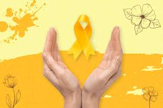

O mês dedicado à conscientização sobre a prevenção ao suicídio, marcado pelo símbolo do laço amarelo que representa esperança e solidariedade
Prevenção ao Suicídio 🛡️
Uma abordagem compassiva e científica para identificar sinais de alerta e oferecer apoio adequado a pessoas em situação de vulnerabilidade emocional.
O que é o setembro amarelo
a. O Setembro Amarelo é uma campanha brasileira de prevenção ao suicídio, iniciada em 2015 pelo Centro de Valorização da Vida (CVV), Conselho Federal de Medicina (CFM) e Associação Brasileira de Psiquiatria (ABP). A iniciativa busca quebrar tabus e promover o diálogo aberto sobre saúde mental, oferecendo informação qualificada e apoio emocional para pessoas em situação de vulnerabilidade.
Diálogo Promover conversas francas sobre saúde mental, eliminando o estigma e incentivando a busca por ajuda profissional quando necessário
Educação e Informação Disseminar conhecimento científico sobre prevenção ao suicídio, fatores de risco e sinais de alerta para toda a sociedade.
Rede de Apoio Fortalecer sistemas de suporte comunitário e profissional para pessoas que enfrentam crises emocionais e pensamentos suicidas.
"A vida vale a pena ser vivida"
Uma mensagem simples, mas poderosa, que reafirma o valor intrínseco de cada existência e a importância de buscar ajuda nos momentos difíceis
"Você não está sozinho"
Lembra que sempre há pessoas dispostas a escutar e apoiar, seja família, amigos ou profissionais especializados em saúde mental.
"Pedir ajuda é um ato de coragem"
Reconhece que buscar apoio profissional demonstra força e maturidade emocional, não fraqueza.
O laço amarelo é o símbolo internacional da prevenção ao suicídio, representando esperança, solidariedade e apoio às pessoas que enfrentam momentos de crise emocional. Sua cor vibrante simboliza a luz que pode iluminar os momentos mais sombrios da vida humana.
A representatividade do laço amarelo transcende fronteiras culturais, unindo comunidades em torno do compromisso coletivo de valorizar cada vida e promover o bem-estar mental como prioridade social.
Passos de Prevenção
Reconhecer os sinais de alerta em si mesmo e nos outros
Buscar informação qualificada sobre saúde mental
Desenvolver habilidades de escuta ativa e empática
Conhecer os recursos de apoio disponíveis na comunidade
Promover ambientes acolhedores e livres de julgamento
Frases inspiradores
Sua vida tem valor e significado únicos
Momentos difíceis são temporários, mas a vida é preciosa
Buscar ajuda demonstra força, não fraqueza
Cada pessoa merece apoio e compreensão
Juntos podemos criar uma rede de cuidado e proteção
Importancia da Saude Mental em Diferentes Areas da Vida
Vida Pessoal
Autoconhecimento e equilíbrio emocional são fundamentais para o bem-estar individual e a qualidade de vida pessoal.
Relacionamentos
A saúde mental influencia diretamente nossa capacidade de amar, comunicar e manter vínculos saudáveis com outras pessoas.
Trabalho e estudo
O bem-estar mental impacta nossa produtividade, criatividade e capacidade de aprendizado em ambientes profissionais e acadêmicos.
Saude Fisica
Existe uma conexão profunda entre mente e corpo - o estresse e a ansiedade podem manifestar-se em sintomas físicos.
Autoestima
A saúde mental saudável promove uma autoimagem positiva, autocompaixão e confiança para enfrentar os desafios da vida.

Video Explicativo
Preencha o Formulario de Acolhimento
Você não esta sozinho
O formulário do Setembro Amarelo é uma ferramenta crucial para iniciar conversas significativas sobre saúde mental. Ele foi projetado para promover o diálogo, identificar estudantes em necessidade de apoio e direcioná-los a recursos seguros e eficazes.